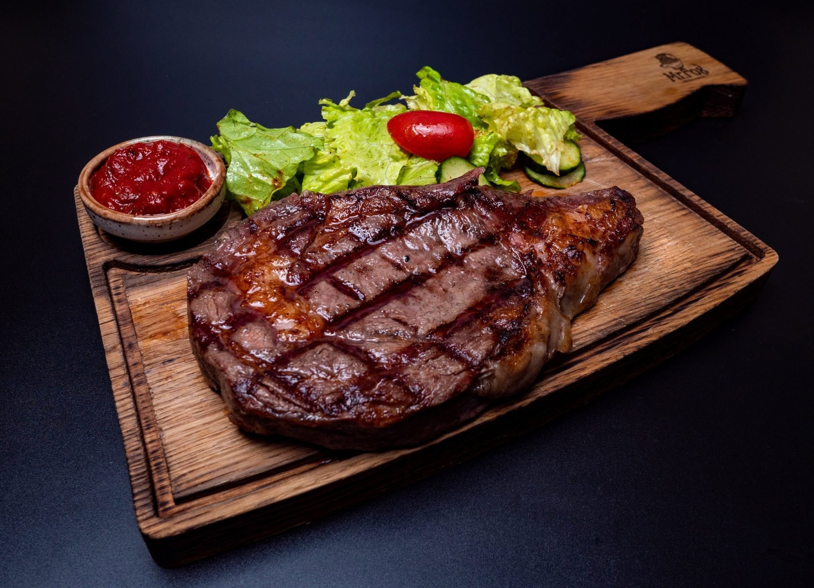

Cooking Store
На главную страницу

Ингридиенты
1. Говяжий стейк-кострец (вырезка из брюшины) - 450 г.
2. Горчица дижонская - 1 ч. л.
3. Сахар - 3/4 ч. л.
4. Сливки жирные - 1,5 ст. л.
5. Соль - 3/8 ч. л.
6. Перец черный молотый - 0,25 ч. л.
7. Масло растительное - 1 ч. л.
8. Масло растительное для смазывания
9. Чеснок (измельченный) - 1,5 ч. л.
10. Соус соевый - 2 ст. л.
11. Кинза свежая (рубленая) - 2 ст. л.
Процесс приготовления
Посмотрите обучабщее видео или
следуйте инструкции ниже
Рецепт
1. Сковороду для гриля разогреть на сильном огне до высокой температуры.
2. Стейк смазать растительным маслом, посыпать со всех сторон солью и перцем.
Выложить мясо на разогретую сковороду, жарить около 5 минут с каждой стороны. Дать стейку отдохнуть минуты три.
3. На средне-сильном огне разогреть маленькую сковороду, налить 1 чайную ложку масла,
выложить чеснок, готовить около 30 секунд. Затем ввести в сковороду соевый соус,
горчицу и сахар, готовить примерно 1 минуту.
4. Снять сковороду с плиты, ввести сливки и 1 столовую ложку кинзы.
5. Стейк порезать ломтиками по диагонали, посыпать оставшейся кинзой и подавать с горчичным соусом сразу же.